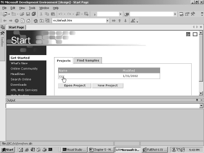
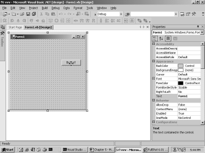
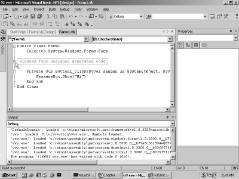

4. Access Modifiers
Wherever we may venture these
days, there is an exorbitance of security. Barely a few are allowed access to
the resources that are considered vital. Programming languages like VB also
implement similar curbs. Access is denied to code that is crucial, in order to
evade transgression.
a.vb
Public Class zzz
Shared Sub Main()
dim a as yyy = new yyy
a.i = 10
End Sub
End Class
class yyy
dim i as integer
end class
Error
c:\il\a.vb(4) : error BC30390: 'yyy.i' is not accessible in
this context because it is 'Private'.
In this example, we have a class
yyy with an instance variable i of type integer. In the sub Main within zzz, an
instance variable 'a' of type yyy is declared and instantiated simultaneously.
This act saves us one line of code.
On the next line, we attempt to
initialize the instance variable i to a value of 10. On doing so, we get an
error message informing us about the non-accessibility of the variable, since
it is 'private'. This error does not occur when we initialize the variable 'a'.
In VB, every entity that is
created, is marked 'private' by default. Thus, in class yyy, the integer
variable i is private, and therefore, completely inaccessible. However, the
same rules do not apply to members of the same class. So, if there had been
more members of class yyy, they could have accessed the integer i with ease.
This privilege is granted
exclusively to the members of the class. It is not even extended to the derived
classes or the objects of the class.
On adding the modifier 'public'
to the variable, as in "Public dim i as integer", the error vanishes.
a.vb
Public Class zzz
Shared Sub Main()
End Sub
End Class
class xxx
Inherits yyy
sub abc
i = 10
end sub
end class
class yyy
protected dim i as integer
end class
The modifier of 'public' allows
access to all and sundry, whereas, the modifier of 'protected' allows only the
derived classes to access the variables.
The class yyy has a 'protected'
variable i of type integer. The class xxx derives from the class yyy, since it
has the clause of 'inherits' added to it. Due to this, it inherits all the
members contained in the class yyy. If we now initialize the variable, no
errors are generated.
This is because the variable is
marked as 'protected', in the absence of which, the same error as depicted
above, would have been displayed. Also, creating an instance of the class xxx,
does not allow access to the protected variables. The keyword DIM is optional,
when used in consonance with access modifiers.
b.vb
public class yyy
friend i as integer
sub abc
i = 100
end sub
end class
We start by compiling the above
program b.vb, to create a dll using the following command:
>vbc /target:library b.vb
The file b.dll contains a sub
abc, which initializes the instance variable i to 100. Note that the instance
variable is declared as a 'friend'. The program a.vb given below, refers to
this 'friend' variable and amends its value to 10.
a.vb
Public Class zzz
Shared Sub Main()
dim a as yyy = new yyy
a.i = 10
End Sub
End Class
>vbc a.vb /r:b.dll
On compiling, the following
error is reported:
Error
C:\il\a.vb(4) : error BC30390: 'yyy.i' is not accessible in
this context because it is 'Private'.
The 'friend' access modifier
signifies that none other than the entities in the same dll or assembly can
access its variables. Since the instance variable i is being accessed from
another assembly named 'a', an access violation is reported.
The basic rule is being reiterated
wherein, the same class is allowed total access to any member. This behavior is
at one extreme of the security spectrum. At the other extreme lies the 'public'
modifier where no rules are applicable.
The 'protected' modifier rests
in the middle wherein, just as in the case of 'private', the derived classes
are permitted access to the 'protected' members in the class. Members with the
'friend' modifier, are accessible from the same assembly that contains their
declaration.
a.vb
Public Class zzz
Shared Sub Main()
dim a as yyy = new yyy
a.abc(100)
a.abc("hi")
End Sub
End Class
class yyy
Overloads sub abc( i as integer)
System.Console.Writeline("yyy abc {0} " , i)
end sub
Overloads sub abc( s as string)
System.Console.Writeline("yyy abc {0} " , s)
end sub
end class
Output
yyy abc 100
yyy abc hi
This program certainly is no
path-breaker. The class yyy has two subs with the same name of 'abc', but with
different parameter types. Moreover, a new keyword of 'Overloads' has been
incorporated within the function.
The main function in the class
zzz first creates an instance variable 'a' of type yyy. Thereafter, it calls
the function abc twice, but each time, it uses distinct parameters.
The keyword 'Overloads' apprizes
VB of the fact that the class contains more than one sub with the same name.
This keyword is optional. So, when it is removed, everything would continue to
work as before. However, if we obliterate one of the 'overloads' from any of
the abc functions, the following error would be generated:
Error
c:\il\a.vb(12) : error BC31409: sub 'abc' must be declared
'Overloads' because another 'abc' is declared 'Overloads'.
The rule is very
straightforward: Either use the keyword 'Overloads' in all subs having the same
name, or simply steer clear of it!
a.vb
Public Class zzz
Shared Sub Main()
dim a as xxx = new yyy
dim b as yyy = new yyy
a.abc
b.abc
End Sub
End Class
class yyy
Inherits xxx
sub abc
System.Console.Writeline("yyy abc")
end sub
end class
class xxx
sub abc
System.Console.Writeline("xxx abc")
end sub
end class
Warning
c:\il\a.vb(11) : warning BC40004: sub 'abc' conflicts with
sub 'abc' in the base class 'xxx' and so should be declared 'Shadows'.
Output
xxx abc
yyy abc
The above example does not
generate any errors, however it displays a warning. A warning is a very benign
complaint. Hence, it allows the compiler to create an executable file. However,
it is in our own interest that we pay heed to these warnings, because if we
snub them now, there is a strong probability of facing embarrassment at a later
stage.
The class xxx is the base class
with one sub abc. The class yyy derives from the class xxx, and it also has one
sub called abc. The warning is generated because the subs have the same name in
both, the base class and the derived class. The compiler expects the sub in the
derived class to be assigned a distinct or a new name.
On adding the keyword 'Shadows'
to the sub abc, as in 'Shadows sub abc' in the class yyy, the warning
disappears.
In one of the earlier chapters,
we had learnt that a derived class can replace a base class. Accordingly, we
create an object 'a' of type xxx, and initialize it to a derived class object
xxx. Then, the sub abc is called off it.
The output shows that the sub
abc from class xxx gets called, even though the object has been initialized to
a yyy object. This is because the data type of the object calling the sub, is
accorded preference over the others. Also, due to the 'shadows' keyword, the
compiler refers to the subroutine abc in the yyy, in a very different manner.
The second object 'b' of type
yyy calls the sub abc from yyy, since there is no name-clashing in this
respect, and a sub called abc exists in class yyy. If the compile time data
type specified in the DIM statement and the run time data type stipulated in
the 'new' are identical, it does not create any problems.
The object is created as per the
run time data type specified, when the 'new' statement is executed. However, we
have the option of calling the subs either from the base type or from the
derived type. In this example, the abc subroutine is called from the base type.
In the next round, we would like
to call the sub off the run time data type, i.e. yyy, rather than off the
compile time data type, which is the default.
a.vb
Public Class zzz
Shared Sub Main()
dim a as xxx = new yyy
dim b as yyy = new yyy
a.abc
b.abc
End Sub
End Class
class yyy
Inherits xxx
Overrides sub abc
System.Console.Writeline("yyy abc")
end sub
end class
class xxx
Overridable sub abc
System.Console.WriteLine("xxx abc")
end sub
end class
Output
yyy abc
yyy abc
The above output confirms that
the sub abc called off the object 'a', is from the derived class yyy. Thus, the
code has been called from the derived class and not from the base class.
This has been achieved by adding
two keywords of 'Overrideable' and "Overrides'.
We first aspire that the abc in
the base class xxx should allow the derived classes to override it. To
implement this, the sub abc in class xxx must contain the keyword
'Overridable'. This keyword informs the compiler that the sub abc allows
derived classes to override it.
This is not all! The derived
class must also state expressly that it wants to override the abc sub in the
base class. For this very reason, the Overrides keyword has been employed.
Thus, the object 'a' now calls the sub abc from yyy, which is the run time
type.
The presence of both the
keywords 'Overridable' and 'Overrides', is absolutely imperative. If the
'Overrides' keyword is omitted in the derived class, the default keyword of
'shadows' will be pressed into action. As a consequence, the compile time data
type would then take precedence. Thus, the sub abc will be called from the
class xxx. However, if we specify the 'Overrides' keyword in the derived class
and omit the 'Overridable' keyword from the base class, it will result in the
following error:
Error
c:\il\a.vb(11) : error BC31086: 'abc' overrides a sub in the
base class 'xxx' that is not declared 'Overridable'.
This error signifies that the
base class must authorize the derived classes to override its members. The
derived class would then be free to decide whether it wants to override it or
not.
On certain occasions, there
exists specific code that must not be overridden under any circumstances. Under
such situations, the base class can simply ignore the 'Overridable' keyword,
thus eschewing such a eventuality altogether.
One more combination that is not
permissible with the sub abc in class yyy is 'Overrides Shadows sub abc'.
The error message generated is
self-explanatory:
Error
c:\il\a.vb(11) : error BC31408: 'Overrides' and 'Shadows'
cannot be combined.
The keyword 'Shadows' conceals
the derived class sub name from the base class, whereas, the 'overrides' does
just the reverse! The 'Overrides' keyword ensures that it is the sub from the
derived class that gets called, and not the one from the base class. Thus,
these two keywords are totally incompatible with each other.
a.vb
Public Class zzz
Shared Sub Main()
dim a as xxx = new yyy
a.abc
End Sub
End Class
class yyy
Inherits xxx
OverLoads Overrides sub abc
System.Console.Writeline("yyy abc")
MyBase.abc
end sub
end class
class xxx
overridable sub abc
System.Console.Writeline("xxx abc")
end sub
end class
Output
yyy abc
xxx abc
We have a single object 'a' of
type xxx, which is initialized to a yyy type. Now, when the abc subroutine is
called, it gets called from the class yyy, and not from the base class.
Nevertheless, at times, we would
want to explicitly call the base class, instead of the derived class. To do so,
the 'MyBase' keyword is used in the derived class containing the sub. The
'OverLoads' keyword is optional. So, even when there is no recurrence of the
abc subroutine, it brews no trouble.
a.vb
Public Class zzz
Shared Sub Main()
dim a as xxx = new yyy
'a.abc
End Sub
End Class
class yyy
Inherits xxx
OverLoads Overrides sub abc
System.Console.Writeline("yyy abc")
MyBase.abc
end sub
end class
class xxx
protected overridable sub abc
System.Console.Writeline("xxx abc")
end sub
end class
Output
c:\il\a.vb(9) : error BC30266: 'Public Overrides Overloads
Sub abc()' cannot override 'Protected Overridable Sub abc()' because they have
different access levels.
One minor rule related to
overriding is that, the access modifiers to the functions must remain the same.
In the above example, the sub abc contains the access modifier of 'protected',
which is not present in the derived class, and thereby yields the error.
Thus, the access modifiers to
the function or to the sub, must be the same or else, an error gets generated.
a.vb
Public Class zzz
Shared Sub Main()
dim a as zzz
if a is nothing then
System.Console.WriteLine("First")
end if
a = new zzz
if a is nothing then
System.Console.WriteLine("Second")
end if
End Sub
End Class
Output
First
In this chapter, the above
program commenced by declaring a zzz object named 'a'. The object is yet to be
initialized, and upto this point, it is devoid of any value.
This can be substantiated by
using the 'is nothing' clause in an 'if' statement. The 'is' operator
ascertains whether the object on the left has the value of the entity specified
on the right or not.
The word 'nothing' is a keyword,
which represents an uninitialized value. Accordingly, the first 'if' statement
returns a true, while the second 'if' statement returns a false, as the object
'a' has now been initialized.
a.vb
Public Class zzz
Shared Sub Main()
dim a as integer
if a is nothing then
System.Console.WriteLine("First")
end if
End Sub
End Class
Error
c:\il\a.vb(4) : error BC30020: 'Is' requires operands that
have reference types, but this operand has the value type 'Integer'.
We start by declaring 'a' as an
integer, and then, deploy the same 'is' operator on it. An error gets reported
because the 'is' operator works only on reference types, and not on value
types.
There are two basic types in VB:
• The value types or the inbuilt types
that we encountered earlier, where only the DIM keyword is sufficient to create
variables, without the need of any instance or of 'new'.
• The reference types that include the
user-defined ones, and the other types that do not fall within the purview of
value types.
a.vb
<aaa>Public Class zzz
Shared Sub Main()
End Sub
End Class
class aaa
Inherits System.Attribute
end class
Any entity placed within angle
brackets, is called an 'attribute'. Thus, aaa is an attribute, which is placed
over the class zzz. An attribute signifies a class that has been derived from
the class Attribute, in the System namespace. An attribute has scores of
applications, which we shall delve upon later.
a.vb
' Honey I am home
Public Class zzz
Shared Sub Main()
End Sub
End Class
No errors are generated in spite
of the 'inserted' statement being present on the first line. This is because a
single inverted comma indicates a comment line, which is completely ignored by
the compiler. Programmers insert comments in order to explicate code.
Also from the comment sign upto
the end of the line, the statement gets ignored by the compiler.
Every programmer is generally
under the delusion that someday, someone would read his/her code and judge
him/her to be the smartest programmer to walk the terra-firma! The explanations
placed within comments serve as a lode star, when the existing program has to
be enhanced or modified, however, this appears to be a real daunting task!
We commenced this book with a
simple Visual Basic project, where the last task that we undertook, was to
display a button on our screen. Then, we took a diversion to explore the
language.
This was absolutely imperative
since Visual Studio.Net generated a million lines of code during the creation
the form window and the button. It would have been an uphill task to try and
decipher the code in the first chapter itself, since we were very naive about
the language and its working at that time.
Now that we are comfortable and
at home with the concepts of the language, let us endeavour to discern this
code, and also to embellish it with some of our code. Start the Visual
Studio.Net program. The screen that will appear, is evident in screen 4.1.
|
 |
|
Screen 4.1 |
Our Start page lists only one
project, i.e. the one that we recently toiled on. Your screen could have a list
of many such projects.
Click on the project called vvv
to arrive at the screen painter, as shown in screen 4.2. Now, double click on
the button.
|
 |
|
Screen 4.2 |
Doing so, would open up a new
window called the code painter and the cursor would get positioned at the
following function:
Private Sub Button1_Click(ByVal sender As System.Object, ByVal e
As System.EventArgs) Handles Button1.Click
MessageBox.Show("Hi")
End Sub
We shall be explaining this
function shortly, but prior to that, we want you to append the line
MessageBox.Show with "Hi", as the string parameter to it. Now, press
the F5 key, which is a short cut for compiling and running the program. Along
the way, we shall introduce you to a number of these short cuts, which shall
step up your pace of working with Visual Studio.
On clicking the button, a
message box appears, which is similar to what we had encountered in the Events
section. Now, close the application and revert back to Visual Studio. The code
that is displayed in the window, is shown in the screen 4.3.
|
 |
|
Screen 4.3 |
Select the entire code and paste
it into an editor, such as Notepad.
You may also click on the 'plus'
sign and view the actual code generated by the framework. We have reproduced
the code below, after stripping away the superfluous portions.
Form1.vb
Public Class Form1
Inherits System.Windows.Forms.Form
#Region " Windows Form Designer generated code "
Public Sub New()
MyBase.New()
'This call is required by the Windows Form Designer.
InitializeComponent()
'Add any initialization after the InitializeComponent() call
End Sub
'Form overrides dispose to clean up the component list.
Protected Overloads Overrides Sub Dispose(ByVal disposing As
Boolean)
If disposing Then
If Not (components Is Nothing) Then
components.Dispose()
End If
End If
MyBase.Dispose(disposing)
End Sub
Friend WithEvents Button1 As System.Windows.Forms.Button
'Required by the Windows Form Designer
Private components As System.ComponentModel.IContainer
'NOTE: The following procedure is required by the Windows Form
Designer
'It can be modified using the Windows Form Designer.
'Do not modify it using the code editor.
<System.Diagnostics.DebuggerStepThrough()> Private Sub
InitializeComponent()
Me.Button1 = New System.Windows.Forms.Button()
Me.SuspendLayout()
'
'Button1
'
Me.Button1.Location = New System.Drawing.Point(88, 96)
Me.Button1.Name = "Button1"
Me.Button1.TabIndex = 0
Me.Button1.Text = "Button1"
'
'Form1
'
Me.AutoScaleBaseSize = New System.Drawing.Size(5, 13)
Me.ClientSize = New System.Drawing.Size(292, 273)
Me.Controls.AddRange(New System.Windows.Forms.Control()
{Me.Button1})
Me.Name = "Form1"
Me.Text = "Form1"
Me.ResumeLayout(False)
End Sub
#End Region
Private Sub Button1_Click(ByVal sender As System.Object, ByVal e
As System.EventArgs) Handles Button1.Click
MessageBox.Show("Hi")
End Sub
End Class
The code produced here is
without the redundant blank lines. We believe that unless we have deciphered
the code generated by the framework, we would never be at ease with the
product. Besides, without a thorough understanding, it becomes exceedingly arduous
to augment the existing code.
The code begins with a class
called Form1, which is derived from the class Form. Since the 'imports'
statement is absent, the Form class is prefaced with the namespace. Any line beginning with the # character is
called a 'directive'. Thus, #Region is a directive, which as usual, ends with
End Region. Clicking on the plus sign with # Region for Windows Form Designer
in Form1, would result into a display of the code generated by the framework.
Thus, whenever the Region directive
is encountered, all the code following it upto the 'End Region' directive, is
concealed. Furthermore, any string placed after the Region directive within the
code, is displayed as help. This feature facilitates segregation of code of
certain types. Thus, by placing the Region directive in a class, it becomes
much more convenient to expand and contract the code of a class. Also, it
enables the code painter to display a larger number of program lines, since
there is not much space available on the screen. In this case, the Region
directive encapsulates all the code generated by Visual Studio.Net.
There is no Sub named Main
visible anywhere in this generated code. However, its existence is taken for
granted. The constructor or the sub
'new', is the first one to be executed. The code embodied in it first calls the
original constructor from the Form class, which is optional. Then, it proceeds
to call the function InitializeComponent. Let us now press on with this
function.
The Sub InitializeComponent is private,
and it is tagged with an attribute of DebuggerStepThrough from the namespace
System.Diagnostics. At this stage, this attribute does not assume much
significance, and even if we delete it, heaven will not fall upon our heads!
Thereafter, a new instance of a
Button object called Button1 is created. Button1 now becomes an instance
variable, defined with the 'friend' access modifier and the 'WithEvents'
keyword, which allows the object to handle events. The software developer who
wrote this program to generate the VB code, was over-cautious and thus, tagged
everything with the word 'Me'; however, this can be safely ignored.
A large number of controls can
be added to the form, but with the addition of every control, the form has to
be redrawn. This makes the User Interface extremely clumsy and unwieldy. So, in
order to suspend the process of laying out the Controls on the form, the Form
designer is requested to suspend drawing, till all controls have been rested in
place. They can all be designed in one single stroke.
The function SuspendLayout
ensures that the Layout process is suspended for the moment. Once the code for
all controls has been entered, the function ResumeLayout is executed, thus
signaling the Form to display all the controls.
The Code Writer writes the code
in a very systematic manner. First, the mandatory button properties such as
Location, Name, Text and TabIndex are initialized to specific values. The
TabIndex property is used to determine the control that should gain focus,
whenever the tab key is pressed. For
the moment, the 'name' property is not used.
Then, the Form properties such
as ClientSize and AutoScaleBaseSize are initialized. The ClientSize property
determines the initial window size, whereas, the AutoScaleBaseSize member
decides the minimum size to which the form window can be minimized.
The AddRange function is passed
an array of Controls, which currently has only one member of the Button object,
since the form has only a single control placed on it. The title of the Form is
also set to a value, and like the Button, it is also assigned a name.
Visual Studio.Net is inherently
aware that the Click event is the default event for the button. Therefore, on
double clicking on the button, it writes a sub named Button1_Click. The name
consists of the name of button object, followed by the word 'Click'.
This sub is passed two
parameters with the 'Handles' keyword, having Button1 and Click, and thereby
handling the click event of the button. Thus, each time the button is clicked,
the Button1_Click sub gets called.
The last function that screams
for attention is named Dispose. The language keyword 'new' creates an object.
However, there is no corresponding 'delete' keyword for destroying the
object.
As per the latest trends in
programming languages, an object can be created explicitly, but it is the
prerogative of the system to decide when the object should die. In programming
languages, this concept is given the nomenclature of 'garbage collection'. By
convention, the Dispose function is called whenever the objects need to clean
things up.
There can be multiple dispose
functions in a program. The word OverLoads is optional, which you may recall,
implies that the Form class has a similar function containing the keyword
'overridable'. The 'protected' modifier is applied to the function, because the
original sub also contains it.
Then, we check whether the
instance variable in the form has been instantiated or not. If the parameter
contains some value, it is assumed that the object has been created. So, the
Dispose function is called off this IContainer object. The line demonstrates
good programming style, which demands that the similar function of the base
class be called.
Barring the 'not' keyword that
converts a True to False and vice-versa, we have expounded every single concept
in the above code, by means of small program snippets. Our approach in the
remaining chapters would be to build VB applications, and simultaneously,
attempt at comprehending the VB code that gets generated.
Our programs will be pint-sized,
since only then is it feasible to explicate the concept lucidly. We will go to
the extent of explaining every keystroke that is pressed. So, if you follow our
instructions meticulously to the 'T' and not go astray, you would be able to
build complex windows applications with considerable ease.
It would be a revelation to you that when we began learning a product like Visual Studio.Net, we found it slightly complicated. This was because the diminutive details of the product had to be unraveled, while trying to learn the approach that Visual Studio.Net expected us to adopt. Therefore, we have tried to make this voyage as comfortable as possible for you.